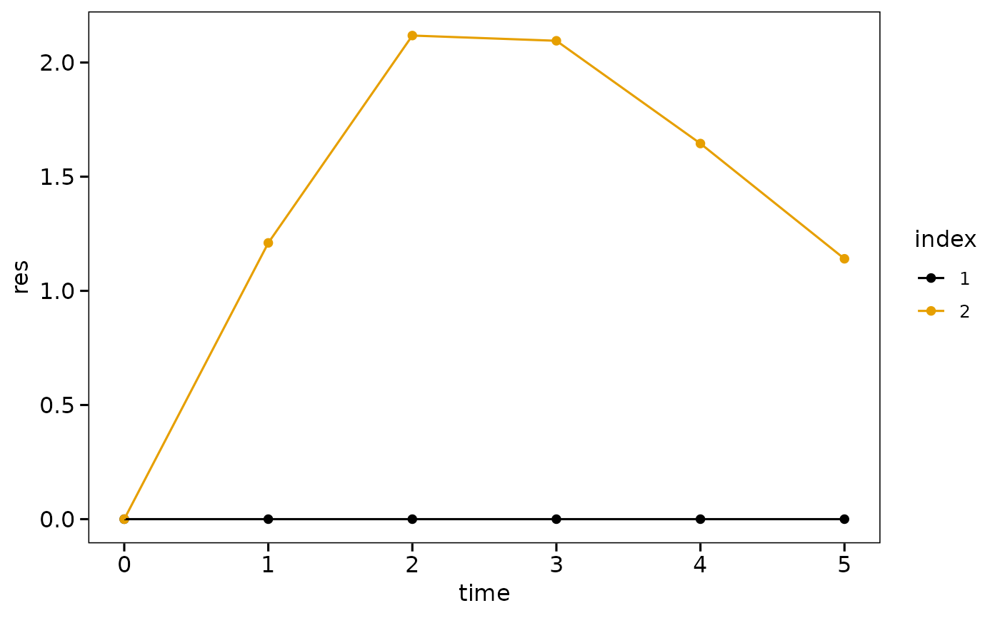

Sums the squared weighted residuals of each fit over all variables not
named in split and plots the sums.
Usage
plotResiduals(parframe, ...)
# Default S3 method
plotResiduals(parframe, x, data, split = "condition", errmodel = NULL, ...)Arguments
- parframe
A parframe, e.g. from
as.parframe(mstrust(...)). The columnindexlabels the fits; without it the row numbers are used.- ...
Further arguments passed to
x.- x
Prediction function returning a prdlist with names matching
data.- data
A datalist, i.e. a named list of data frames with columns
name,time,valueandsigma.- split
Character vector of the variables to keep, from
"time","name","condition"and"index".split[1]is the x-axis,split[2]the color grouping (defaults tosplit[1]), further entries are facets. Defaults to"condition".- errmodel
Optional error model, an obsfn. With it the sums include
log(sigma^2)of each data point.
Examples
times <- 0:5
grid <- data.frame(name = "A", time = times, row.names = paste0("A", times))
x <- Xd(grid, condition = "C1")
data <- as.datalist(data.frame(name = "A", time = times,
value = exp(-times / 2), sigma = 0.1,
condition = "C1"))
fits <- parframe(data.frame(value = c(1, 2), converged = TRUE,
iterations = 10,
rbind(exp(-times / 2), exp(-times / 3)) |>
`colnames<-`(getParameters(x))),
parameters = getParameters(x))
plotResiduals(fits, x, data, c("time", "index"))
